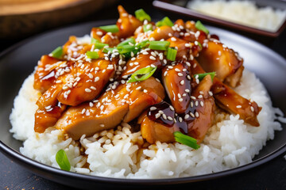

Teriyaki Chicken

Teriyaki chicken is a savory-sweet dish made by cooking tender chicken in a
glossy sauce of soy sauce, sugar, and ginger. It’s often served with rice
and vegetables for a flavorful, satisfying meal.
Ingredients
- 2 tbsp cornstarch
- 2 tbsp water
- 1 cup low-sodium soy sauce
- 1/2 cup white sugar
- 1/4 cup mirin (Japanese sweet wine)
- 4 tsp grated fresh ginger
- 3 gloves garlic, minced
- 1/4 tsp red pepper flakes
- 4 skinless, boneless chicken breast halves
Steps
- Preheat oven to 400F (or 200C)
- Whisk cornstarch and water in a small bowl until dissolved.
-
Combine soy sauce, sugar, mirin, ginger, garlic, and
red pepper flakes in a saucepan over medium heat to simmer.
- Slowly whisk in cornstarch-water mixture and bring to a boil.
-
Reduce heat to medium-low, and simmer until thickened,
stirring often, for 10 minutes.
-
Pat chicken dry with paper towels; arrange in baking dish
and pour sauce evenly over chicken breasts.
-
Bake until no more pink in center, and juices run clear (25-30 minutes).
An instant-read-thermometer inserted into the center should read atleast 165F.
Home